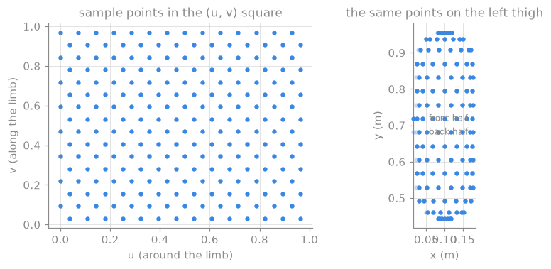
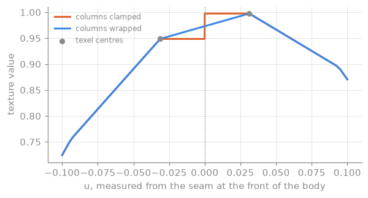
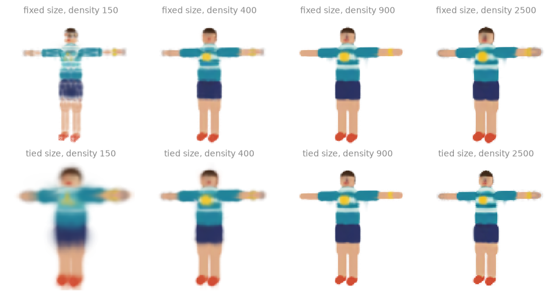
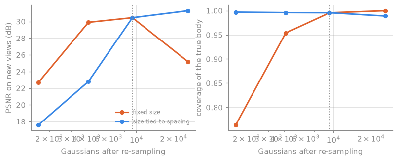
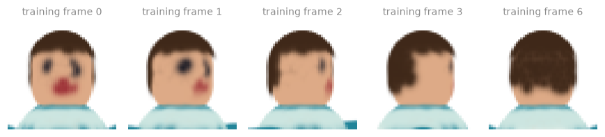
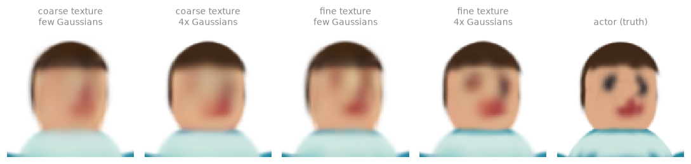

Sampling and density: how many Gaussians, and where?#
What you will learn
How Gaussians are sampled from a shell texture: sample points, bilinear lookup, the wrap-around in \(u\), and a base size tied to the spacing between samples.
What happens when you re-sample a trained avatar at another density without retraining it.
Why texture resolution and the number of Gaussians are two separate knobs, and what a per-part density boost buys on a head close-up.
What sharing texels between neighbouring Gaussians does, and does not, buy compared with free parameters per Gaussian.
Prerequisites: Lesson 4a.
1. Two grids that are easy to confuse#
A shell map has two grids, and this lesson is about keeping them apart.
The texel grid is where the learned numbers live: a tile of \(H \times W\) texels per body part and shell. It sets how much detail the avatar can store.
The sample points are where the Gaussians sit: a list of \((u_i, v_i)\) per part. It sets how many Gaussians are rendered, and so how finely the stored detail is drawn.
A Gaussian is not a texel. It reads the texture at its own \((u_i, v_i)\), between texel centres, by interpolation. So the two grids can have different resolutions, and you can change one without touching the other.
cu.sample_uv(density) makes the sample points. For each part it lays a regular grid over the \((u, v)\)
square, with the number of rows and columns chosen so that points are about equally far apart on the
surface in both directions, and so that the part gets about density points per square metre. Every other
row is shifted by half a step.
part, u, v = cu.sample_uv(900.0)
print("points per part:", {n: int((part == p).sum()) for p, n in enumerate(cu.PART_NAMES) if n[0] != "r"})
measured = torch.tensor([float((part == p).sum()) / cu.body.part_area(p) for p in range(cu.N_PARTS)])
big = torch.tensor([cu.body.part_area(p) > 0.08 for p in range(cu.N_PARTS)])
print(f"points per square metre on the larger parts: {float(measured[big].min()):.0f} to {float(measured[big].max()):.0f} (asked for 900)")
assert ((measured[big] - 900).abs() < 0.15 * 900).all()
p = cu.part_index("l_thigh")
m = part == p
x, _, _, _ = cu.capsule_surface(p, u[m], v[m])
front = cu.to_np((u[m] < 0.25) | (u[m] > 0.75)) # u = 0 faces the camera at +z
fig, (a0, a1) = plt.subplots(1, 2, figsize=(8.0, 3.4), gridspec_kw={"width_ratios": [1.5, 1]})
a0.scatter(cu.to_np(u[m]), cu.to_np(v[m]), s=10, color=cu.COLORS["gaussian"])
a0.set_xlabel("u (around the limb)"); a0.set_ylabel("v (along the limb)"); a0.set_title("sample points in the (u, v) square")
a1.scatter(cu.to_np(x[:, 0])[front], cu.to_np(x[:, 1])[front], s=10, color=cu.COLORS["gaussian"], label="front half")
a1.scatter(cu.to_np(x[:, 0])[~front], cu.to_np(x[:, 1])[~front], s=10, color=cu.COLORS["gaussian"], alpha=0.25, label="back half")
a1.set_aspect("equal"); a1.set_xlabel("x (m)"); a1.set_ylabel("y (m)"); a1.set_title("the same points on the left thigh")
a1.legend(fontsize=8);
points per part: {'pelvis': 280, 'abdomen': 280, 'chest': 308, 'neck': 56, 'head': 135, 'l_upperarm': 96, 'l_forearm': 70, 'l_hand': 30, 'l_thigh': 224, 'l_shin': 150, 'l_foot': 64}
points per square metre on the larger parts: 875 to 928 (asked for 900)

Small parts get few points and large parts many, because the count follows the surface area. Near the two poles of the capsule the points bunch together in \(u\). That wastes a few Gaussians and does no harm.
2. Reading the texture between texels#
2.1 Bilinear lookup#
Texel \((i, j)\) of an \(H \times W\) tile has its centre at \(u = (j + \tfrac12) / W\), \(v = (i + \tfrac12) / H\). For a sample point \((u, v)\), write its position in texel units and split it into an integer part and a fraction:
The bilinear value is the average of the four surrounding texels, weighted by closeness:
Two things need care at the edges of a tile. Along the limb, \(v\) ends at the poles, so row indices are clamped to the tile. Around the limb, \(u = 0\) and \(u = 1\) are the same line on the surface, so column indices must wrap: the neighbour to the right of the last column is the first column.
def bilinear(tile, uu, vv, wrap=True):
"""Bilinear lookup in one (C, H, W) tile at points (uu, vv). Returns (N, C)."""
C, H, W = tile.shape
x, y = uu * W - 0.5, vv * H - 0.5
j0, i0 = torch.floor(x).long(), torch.floor(y).long()
a, b = (x - j0)[:, None], (y - i0)[:, None]
col = (lambda j: j % W) if wrap else (lambda j: j.clamp(0, W - 1))
row = lambda i: i.clamp(0, H - 1)
t = lambda i, j: tile[:, row(i), col(j)].T
return (1 - b) * ((1 - a) * t(i0, j0) + a * t(i0, j0 + 1)) + b * ((1 - a) * t(i0 + 1, j0) + a * t(i0 + 1, j0 + 1))
avatar = cu.ShellAvatar()
with torch.no_grad():
avatar.texture.copy_(cu.randn(*avatar.texture.shape, generator=cu.generator(1)))
ours = torch.zeros(avatar.n_gaussians, 7)
for k in range(len(avatar.offsets)):
for p in range(cu.N_PARTS):
m = (avatar.shell == k) & (avatar.part == p)
ours[m] = bilinear(avatar.texture[k, p].detach(), avatar.u[m], avatar.v[m])
diff = float((ours - avatar.sample_texture().detach()).abs().max())
print(f"largest difference between this lookup and avatar.sample_texture(): {diff:.1e}")
assert diff < 1e-4
largest difference between this lookup and avatar.sample_texture(): 4.1e-06
2.2 What goes wrong without the wrap#
Take a tile whose content is smooth around the limb and sample it along a ring, once with clamped columns and once with wrapped ones.
W = 16
centres = (torch.arange(W) + 0.5) / W
tile = torch.cos(2 * math.pi * (centres - 0.02))[None, None, :].repeat(1, 12, 1) # smooth and periodic in u
ring_u = torch.cat([torch.linspace(0.90, 0.9999, 40), torch.linspace(0.0, 0.10, 40)])
ring_x = torch.cat([torch.linspace(-0.10, -0.0001, 40), torch.linspace(0.0, 0.10, 40)])
ring_v = torch.full_like(ring_u, 0.5)
clamped = bilinear(tile, ring_u, ring_v, wrap=False)[:, 0]
wrapped = bilinear(tile, ring_u, ring_v, wrap=True)[:, 0]
fig, ax = plt.subplots(figsize=(6.0, 3.0))
ax.plot(cu.to_np(ring_x), cu.to_np(clamped), color=cu.COLORS["error"], label="columns clamped")
ax.plot(cu.to_np(ring_x), cu.to_np(wrapped), color=cu.COLORS["gaussian"], label="columns wrapped")
ax.scatter([-0.5 / W, 0.5 / W], [float(tile[0, 0, -1]), float(tile[0, 0, 0])], color=cu.plotting.INK, zorder=3, label="texel centres")
ax.axvline(0, color=cu.plotting.INK, lw=0.8, ls=":")
ax.set_xlabel("u, measured from the seam at the front of the body"); ax.set_ylabel("texture value"); ax.legend(fontsize=8)
jump = lambda y: float((y[40] - y[39]).abs())
print(f"jump across the seam: clamped {jump(clamped):.3f}, wrapped {jump(wrapped):.4f}")
assert jump(clamped) > 20 * jump(wrapped)
jump across the seam: clamped 0.049, wrapped 0.0001

With clamping, the value is frozen for half a texel on each side of the seam and then jumps. On the body that
is a visible vertical line down the front of every limb, exactly where the logo and the face are. With
wrapping the two ends join smoothly. ShellAvatar.sample_texture wraps by padding each tile with one column
from the other side before interpolating.
2.3 A size that follows the spacing#
The texture stores a size, but not in metres. It stores a multiplier on a base size \(s_0\) that is tied to the distance \(h\) between neighbouring sample points:
With the multiplier at 1, neighbouring Gaussians overlap enough to close the surface, whatever the density. The texture then only has to say “a bit larger here, a bit thinner there”. Section 3 shows what this choice does and where it stops working.
3. Re-sampling a trained avatar#
Fit one avatar to a turn of the actor at the default density. This is the model we re-sample.
actor = cu.ToyActor()
poses, trans = cu.motion("turn", 16)
video = cu.make_video(actor, poses, trans, size=64)
avatar = cu.ShellAvatar() # density 900, texture 12 x 16 per part and shell
hist = cu.fit(avatar, video, iters=120)
print(f"fitted {avatar.n_gaussians} Gaussians in {hist['seconds']:.0f} s; texture holds {avatar.texture.numel()} numbers")
fitted 9308 Gaussians in 2 s; texture holds 91392 numbers
avatar.resample(density) picks new sample points and leaves the texture alone. We try it in two ways. In the
first, the base size stays at the value it had during training, as if size were stored in metres (we overwrite
avatar.spacing to imitate this). In the second, the base size follows the new spacing, which is what the
library does.
views = [cu.orbit_camera(az, size=128) for az in (20, 140, 250)]
truth = [actor.render(c) for c in views]
@torch.no_grad()
def score(model):
out = [model.render(c) for c in views]
psnr = float(np.mean([cu.psnr(o[0], t[0]) for o, t in zip(out, truth)]))
cover = float(np.mean([float(o[1][t[1] > 0.9].mean()) for o, t in zip(out, truth)])) # alpha inside the true body
return psnr, cover, out[0][0]
densities = (150.0, 400.0, 900.0, 2500.0)
rows = {"fixed": [], "tied": []}
for d in densities:
avatar.resample(d)
rows["tied"].append((avatar.n_gaussians,) + score(avatar))
avatar.spacing.fill_(1.0 / math.sqrt(900.0)) # pretend the size did not follow the density
rows["fixed"].append((avatar.n_gaussians,) + score(avatar))
avatar.resample(900.0) # back to the trained sampling
for i, d in enumerate(densities):
f, t = rows["fixed"][i], rows["tied"][i]
print(f"density {d:5.0f} ({t[0]:5d} Gaussians) | fixed size: {f[1]:.1f} dB, coverage {f[2]:.2f} | size tied to spacing: {t[1]:.1f} dB, coverage {t[2]:.2f}")
cu.show_images([r[3] for r in rows["fixed"]] + [r[3] for r in rows["tied"]],
[f"fixed size, density {d:.0f}" for d in densities] + [f"tied size, density {d:.0f}" for d in densities],
ncols=4, size=2.1);
density 150 ( 1640 Gaussians) | fixed size: 22.7 dB, coverage 0.76 | size tied to spacing: 17.6 dB, coverage 1.00
density 400 ( 4128 Gaussians) | fixed size: 29.9 dB, coverage 0.95 | size tied to spacing: 22.8 dB, coverage 1.00
density 900 ( 9308 Gaussians) | fixed size: 30.5 dB, coverage 1.00 | size tied to spacing: 30.5 dB, coverage 1.00
density 2500 (26040 Gaussians) | fixed size: 25.2 dB, coverage 1.00 | size tied to spacing: 31.3 dB, coverage 0.99

fig, (a0, a1) = plt.subplots(1, 2, figsize=(8.6, 3.0))
n = [r[0] for r in rows["tied"]]
for key, colour, label in (("fixed", cu.COLORS["error"], "fixed size"), ("tied", cu.COLORS["gaussian"], "size tied to spacing")):
a0.plot(n, [r[1] for r in rows[key]], marker="o", color=colour, label=label)
a1.plot(n, [r[2] for r in rows[key]], marker="o", color=colour, label=label)
for ax in (a0, a1):
ax.set_xscale("log"); ax.set_xlabel("Gaussians after re-sampling"); ax.axvline(n[2], color=cu.plotting.INK, lw=0.8, ls=":")
a0.set_ylabel("PSNR on new views (dB)"); a1.set_ylabel("coverage of the true body"); a0.legend(fontsize=8)
fixed, tied = rows["fixed"], rows["tied"]
assert fixed[0][2] < 0.9 and tied[0][2] > 0.95 # sparse: holes with a fixed size, none with a tied size
assert tied[3][1] > tied[2][1] - 1.0 # denser than trained: no retraining needed
assert fixed[3][1] < tied[3][1] - 2.0 # ... but only if the size follows the spacing
assert tied[0][1] < tied[2][1] - 3.0 # much sparser than trained: the picture degrades

The dotted line marks the density used in training. Read the result in three parts.
Sparser, fixed size: holes. The Gaussians no longer overlap. The body turns into a net and the coverage drops.
Sparser, tied size: no holes, but blur. Each Gaussian grows to close the surface. The body stays solid and becomes a bloated, smeared version of itself, and the PSNR falls even further than with holes. A tied size protects the silhouette’s coverage, not the detail.
Denser, tied size: it just works. Nearly three times as many Gaussians read the same texture and the picture is as good as, or slightly better than, the trained sampling. With a fixed size the same Gaussians pile up, every pixel is covered many times over, and the outline swells.
So a trained shell map can be re-sampled upwards for free. Going far down loses quality either way, because the learned opacities and size multipliers were tuned for the overlap the avatar was trained with. If you need a lighter model, re-sample and then fine-tune for a few steps (Exercise 2).
4. Two knobs: texture resolution and Gaussian count#
At 64 pixels the head of the full-body video is about six pixels wide, so nothing in this section could be seen there. We switch to a close-up: a camera framed on the head, with the head turning. This is also how the real pipeline’s hi-fi track treats faces, as Lesson 6a explains.
head_cam = lambda size: cu.orbit_camera(0, elevation_deg=0, radius=4.2, target=(0, 1.65, 0), fov_deg=5.0, size=size)
def head_turn(yaws):
yaws = torch.as_tensor(yaws, dtype=torch.float32)
p = torch.zeros(len(yaws), cu.N_JOINTS, 3)
p[:, 0, 1] = yaws # turn the whole body about the vertical axis
return p, torch.zeros(len(yaws), 3)
close_train = cu.make_video(actor, *head_turn(2 * math.pi * torch.arange(12) / 12), cam=head_cam(48))
close_test = cu.make_video(actor, *head_turn([0.2, -0.5, 0.9, -1.2, 2.0, 3.3]), cam=head_cam(128))
cu.show_images([close_train.frame(t) for t in (0, 1, 2, 3, 6)], [f"training frame {t}" for t in (0, 1, 2, 3, 6)], size=1.6);

We fit four avatars to the close-up video. They differ in two settings only: the tile resolution (12 × 16 or
24 × 32 texels) and the density on the head (the default, or four times the default with
boost={"head": 4}). To save time they use two shells.
results, pictures = {}, {}
head = cu.part_index("head")
for res in ((12, 16), (24, 32)):
for boost in (1, 4):
model = cu.ShellAvatar(offsets=(0.0, 0.015), tex_res=res, boost={"head": boost})
hist = cu.fit(model, close_train, iters=100)
ev = cu.evaluate(model, close_test)
results[res, boost] = ev["mean_psnr"]
with torch.no_grad():
pictures[res, boost] = model.render(close_test.cams[0], close_test.poses[0], close_test.trans[0])[0]
print(f"tile {res[0]:2d} x {res[1]:2d}, head density x{boost}: {int((model.part == head).sum()):4d} Gaussians and "
f"{2 * 7 * res[0] * res[1]:5d} texture numbers on the head, {hist['seconds']:4.1f} s, new views {ev['mean_psnr']:.2f} dB")
keys = [((12, 16), 1), ((12, 16), 4), ((24, 32), 1), ((24, 32), 4)]
cu.show_images([pictures[k] for k in keys] + [close_test.frame(0)],
["coarse texture\nfew Gaussians", "coarse texture\n4x Gaussians", "fine texture\nfew Gaussians",
"fine texture\n4x Gaussians", "actor (truth)"], size=2.0);
neither, more_g, more_t, both = (results[k] for k in keys)
assert both > max(more_g, more_t) + 0.7 and both > neither + 2.0
tile 12 x 16, head density x1: 270 Gaussians and 2688 texture numbers on the head, 1.4 s, new views 25.35 dB
tile 12 x 16, head density x4: 1080 Gaussians and 2688 texture numbers on the head, 1.7 s, new views 27.65 dB
tile 24 x 32, head density x1: 270 Gaussians and 10752 texture numbers on the head, 1.4 s, new views 26.84 dB
tile 24 x 32, head density x4: 1080 Gaussians and 10752 texture numbers on the head, 1.7 s, new views 30.75 dB

Only the avatar with both changes shows eyes and a mouth. Each knob alone helps a little and then hits the other one’s limit:
Coarse texture, more Gaussians. The extra Gaussians read the same few texels. Interpolation makes the result smooth, and it cannot make it detailed: an eye is about the size of one texel.
Fine texture, few Gaussians. The texture could store an eye, but the Gaussians are spaced wider than the texels, so most texels are never read and get no gradient. The stored detail is under-sampled.
Both. Capacity lives in the texture. The Gaussians are how that capacity reaches the screen. The two resolutions have to match: about one Gaussian per texel or more.
A per-part boost exists because a uniform density wastes Gaussians. Covering the whole body at the head’s boosted density would multiply the cost of every frame, while boosting only the head adds a few hundred Gaussians:
plain = cu.ShellAvatar()
boosted = cu.ShellAvatar(boost={"head": 4})
uniform = cu.ShellAvatar(density=3600.0)
print(f"default: {plain.n_gaussians} | head x4: {boosted.n_gaussians} | everything x4: {uniform.n_gaussians} Gaussians")
h = boosted.part == head
print(f"spacing on the head: {100 * float(plain.spacing[plain.part == head][0]):.1f} cm -> {100 * float(boosted.spacing[h][0]):.1f} cm; "
f"elsewhere unchanged: {100 * float(boosted.spacing[~h][0]):.1f} cm")
assert boosted.n_gaussians < 1.25 * plain.n_gaussians and uniform.n_gaussians > 3.5 * plain.n_gaussians
default: 9308 | head x4: 10928 | everything x4: 37740 Gaussians
spacing on the head: 3.3 cm -> 1.7 cm; elsewhere unchanged: 3.3 cm
One caution before you conclude that more is always better. This toy face is fitted with exact poses. In Lesson 5b the poses are noisy, and neither knob buys back the detail that the noise destroys.
In the real pipeline#
This lesson |
Real pipeline |
|
|---|---|---|
Sample points |
regular grid per capsule |
points spread over the SMPL shell mesh in proportion to surface area |
Texture |
12 × 16 texels per part and shell |
one 256 × 256 atlas per shell, 11 channels, for 100,000 Gaussians (RESULTS.md) |
Density boost |
|
face ×4 in |
Region |
a whole capsule |
a smooth ramp over a face mask, so density changes gradually at the border |
The real face-density option multiplies the area weight of the triangles in the face region when the points
are drawn, which is the mesh version of boost. Two published results are worth setting beside this lesson’s
clean 2 × 2 picture. On the benchmark, a 512-pixel texture and three times as many Gaussians gave no gain
(“more halo”), while pose correction did
(RESULTS.md, and “What we learned” in the
README). And in the hi-fi study,
“face density helps” was not established: it was a single-seed result under twice the seed spread, and the
verification pass demoted it. Capacity helps only when the data are registered well enough to fill it, which is
the subject of Lesson 5b.
Summary#
A shell map has two grids. Texels store what is learned; sample points decide where Gaussians are drawn. Gaussians read the texture by bilinear interpolation, clamped along the limb and wrapped around it.
The base size of a Gaussian follows the spacing between samples, so a trained avatar can be re-sampled to a higher density without retraining. Far below the trained density the picture degrades: holes if sizes are fixed, blur if they follow the spacing.
Capacity lives in the texture, and the Gaussians carry it to the screen. Detail needs both a fine enough texture and enough Gaussians to read it. A per-part boost spends Gaussians where the camera looks closely.
Sharing texels is not a strong regulariser at one Gaussian per texel. Its value is that density is decoupled from the learned content and that appearance is an image that tools and networks can work on.
Exercises#
cu.sample_uv(density, jitter=0.6)moves every sample point randomly inside its grid cell. Re-sample the trained avatar with and without jitter at density 900 and compare the PSNR on the three test views. Why might a jittered or random sampling be preferable when fitting from scratch?Re-sample the trained avatar to density 300 and fine-tune it for 40 steps with
cu.fit. How much of the loss from re-sampling comes back, and how does the result compare with the avatar at density 900?Section 4 boosts the whole head. Count how many of the boosted Gaussians are on the face (say \(|\phi| < 1.2\) rad around the front, \(0.3 < v < 0.7\)). What fraction of the boost is spent on hair and the back of the head, and how would you avoid it?
Solution 1
for jitter in (0.0, 0.6):
avatar.resample(900.0, jitter=jitter)
print(jitter, round(score(avatar)[0], 2))
avatar.resample(900.0)
The scores are close: the texture is read at slightly different points and bilinear interpolation covers the difference. A regular grid can line up with the pixel grid or with a regular pattern in the texture and produce beating (moiré) patterns; random positions turn that structured error into noise. The real pipeline draws its points at random on the mesh.
Solution 2
avatar.resample(300.0)
print("re-sampled:", round(score(avatar)[0], 2))
cu.fit(avatar, video, iters=40)
print("fine-tuned:", round(score(avatar)[0], 2))
Most of the loss comes back within a few dozen steps, because the texture only has to adjust opacities and size multipliers to the new overlap. The result stays below the density-900 avatar: with a third of the Gaussians, each one covers more than one texel and the finest stored detail is not drawn.
Solution 3
m = (boosted.part == head) & (boosted.shell == 0)
phi = torch.atan2(torch.sin(2 * math.pi * boosted.u[m]), torch.cos(2 * math.pi * boosted.u[m]))
face = (phi.abs() < 1.2) & (boosted.v[m] > 0.3) & (boosted.v[m] < 0.7)
print(float(face.float().mean()))
Well under half of the head’s Gaussians are on the face. To spend the boost only there, the multiplier has to
be a function of \((u, v)\) and not of the part: sample the face region on a finer grid, with a smooth ramp at
its border so that the density does not jump. That is what the real face_density.py does with a face mask.
References#
[Abdal et al., 2024] for shell maps and their generation by a network.
[Kerbl et al., 2023] for free Gaussians with one parameter set each.
Project documentation: README, RESULTS.md and docs/hifi.md.